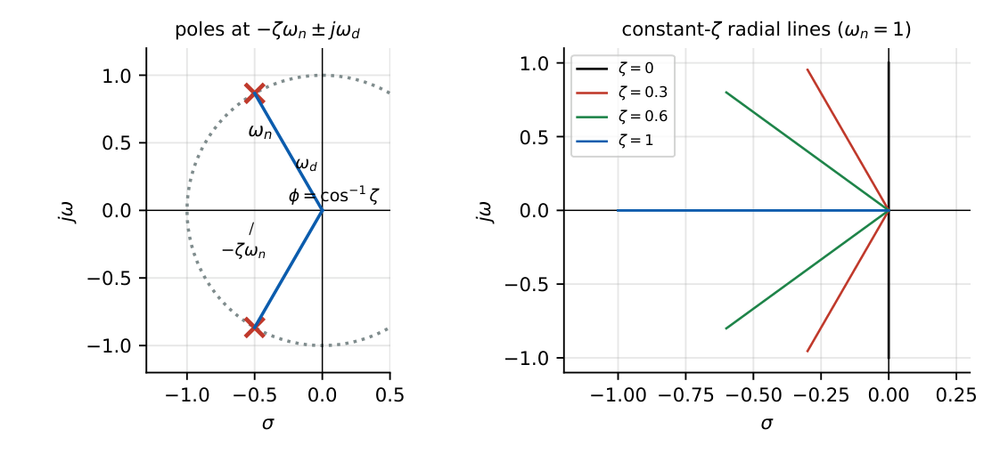
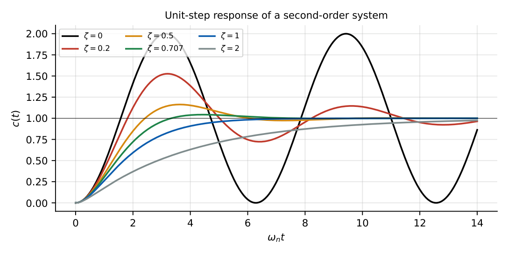
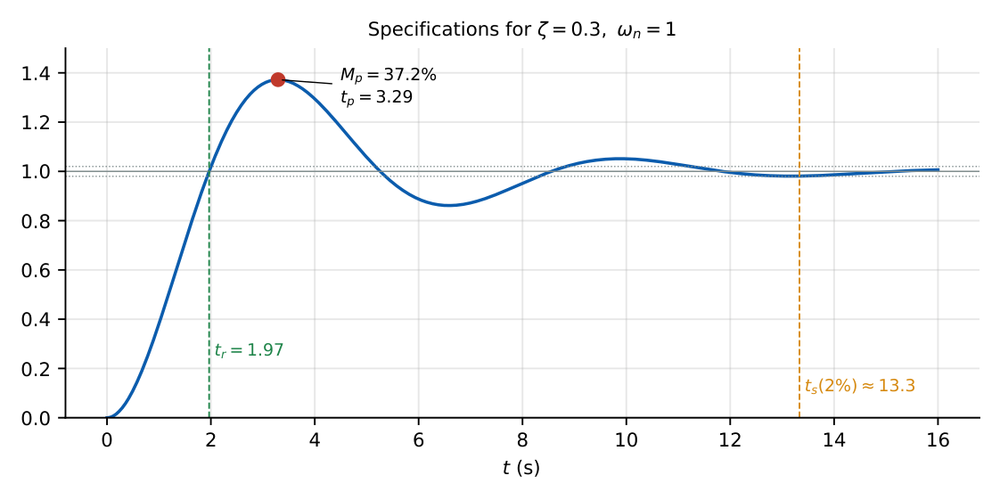

Second-Order Systems
In this chapter
The single most repeated topic: \(\omega_n\), \(\zeta\), \(M_p\), \(t_p\), \(t_s\), \(t_r\); find them from \(G(s)\) (open- or closed-loop) and vice versa. Expect one 2-mark calculation each year.
9.1 Core concept
\(\dfrac{C(s)}{R(s)}=\dfrac{\omega_n^2}{s^2+2\zeta\omega_ns+\omega_n^2}\); poles \(s=-\zeta\omega_n\pm j\omega_n\sqrt{1-\zeta^2}=-\sigma\pm j\omega_d\).
\(\omega_n\) natural frequency, \(\zeta\) damping ratio, \(\sigma=\zeta\omega_n\) damping (attenuation) factor, \(\omega_d=\omega_n\sqrt{1-\zeta^2}\) damped frequency.
Unity feedback on \(G=\dfrac{\omega_n^2}{s(s+2\zeta\omega_n)}\) gives this form.

9.2 Cases by damping
| \(\zeta\) | Poles | Step response |
|---|---|---|
| \(0\) (undamped) | \(\pm j\omega_n\) | \(1-\cos\omega_nt\): sustained oscillation |
| \(0<\zeta<1\) (under) | complex pair, LHP | oscillatory, overshoot |
| \(\zeta=1\) (critical) | double real \(-\omega_n\) | \(1-(1+\omega_nt)e^{-\omega_nt}\): fastest without overshoot |
| \(\zeta>1\) (over) | two real, \(-\omega_n(\zeta\pm\sqrt{\zeta^2-1})\) | sluggish, no overshoot |
| \(\zeta<0\) | RHP | growing: unstable |

9.3 Derivation of the specifications (underdamped)
\(C(s)=\dfrac{\omega_n^2}{s(s^2+2\zeta\omega_ns+\omega_n^2)}\). Partial fractions:
\[
c(t)=1-\dfrac{e^{-\zeta\omega_nt}}{\sqrt{1-\zeta^2}}\sin(\omega_dt+\phi),\qquad \phi=\cos^{-1}\zeta.
\]
Peak time: \(\dot c=0\Rightarrow\sin\omega_dt=0\), first non-trivial root \(\omega_dt_p=\pi\): \(t_p=\pi/\omega_d\).
Overshoot: \(c(t_p)=1+e^{-\zeta\pi/\sqrt{1-\zeta^2}}\), so \(M_p=e^{-\pi\zeta/\sqrt{1-\zeta^2}}\).
Rise time (\(0\to100\%\)): \(c(t_r)=1\Rightarrow\sin(\omega_dt_r+\phi)=0\Rightarrow t_r=\dfrac{\pi-\phi}{\omega_d}\).
Settling time: envelope \(e^{-\zeta\omega_nt}/\sqrt{1-\zeta^2}=0.02\Rightarrow t_s\approx\dfrac{4}{\zeta\omega_n}\) (2%); \(\dfrac{3}{\zeta\omega_n}\) (5%).

\(t_p=\dfrac\pi{\omega_d}\), \(M_p=\exp\!\left(-\dfrac{\pi\zeta}{\sqrt{1-\zeta^2}}\right)\times100\%\), \(t_r=\dfrac{\pi-\cos^{-1}\zeta}{\omega_d}\),
\(t_s=\dfrac{4}{\zeta\omega_n}\) (2%) or \(\dfrac3{\zeta\omega_n}\) (5%), \(t_d\approx\dfrac{1+0.7\zeta}{\omega_n}\).
Ratio of successive peaks: \(\exp\!\left(-\dfrac{2\pi\zeta}{\sqrt{1-\zeta^2}}\right)\); logarithmic decrement \(\delta=\dfrac{2\pi\zeta}{\sqrt{1-\zeta^2}}\).
Inverse: \(\zeta=\dfrac{-\ln M_p}{\sqrt{\pi^2+\ln^2M_p}}\) (\(M_p\) as a fraction).
| \(\zeta\) | 0.1 | 0.2 | 0.3 | 0.4 | 0.5 | 0.6 | 0.707 |
| \(M_p\) (%) | 72.9 | 52.7 | 37.2 | 25.4 | 16.3 | 9.5 | 4.3 |
9.4 Effect of the parameters
- Larger \(\zeta\) \(\Rightarrow\) smaller overshoot (depends only on \(\zeta\)).
- Larger \(\omega_n\) at fixed \(\zeta\) \(\Rightarrow\) faster response (shorter \(t_p\), \(t_r\), \(t_s\)), same overshoot.
- Pole at fixed real part \(\sigma=\zeta\omega_n\): same \(t_s\) regardless of \(\omega_d\).
- Extra zero in the LHP near the poles increases overshoot and speeds up the rise; an extra far-left pole slows the rise (dominant-pole approximation).
9.5 Solved examples
\(\dfrac{C}{R}=\dfrac{25}{s^2+6s+25}\): \(\omega_n=5\), \(2\zeta\omega_n=6\Rightarrow\zeta=0.6\), \(\omega_d=4\). \(M_p=e^{-\pi(0.6)/0.8}=e^{-2.356}=9.5\%\); \(t_p=\pi/4=0.785\) s; \(t_r=(\pi-0.927)/4=0.554\) s; \(t_s(2\%)=4/3=1.33\) s.
\(G=\dfrac{16}{s(s+4)}\), unity feedback: \(T=\dfrac{16}{s^2+4s+16}\), \(\omega_n=4\), \(\zeta=0.5\), \(M_p=16.3\%\), \(t_s=4/2=2\) s. Ramp error \(1/K_v=4/16=0.25\).
Require \(M_p=20\%\): \(\ln0.2=-1.609\); \(\zeta=\dfrac{1.609}{\sqrt{9.870+2.590}}=0.456\).
\(G=\dfrac{K}{s(s+2)}\), unity feedback: \(\omega_n=\sqrt K\), \(\zeta=\dfrac1{\sqrt K}\). Increasing \(K\) from \(1\) to \(4\): \(\zeta\) falls from \(1\) to \(0.5\) (overshoot appears, \(16\%\)) while \(\omega_n\) rises from \(1\) to \(2\).
9.6 Physical interpretation
\(\zeta\) is a measure of energy dissipation per cycle: a spring–mass system with small damping rings, a shock absorber (\(\zeta\approx0.7\)) settles quickly with little overshoot. In feedback design a high gain buys speed but pushes \(\zeta\) down.
(i) \(\zeta=0.707\Rightarrow M_p=4.3\%\); \(\zeta=0.5\Rightarrow16.3\%\). (ii) \(t_s\cdot\text{Re}(p)=4\) (2%). (iii) Real-part of the pole gives \(t_s\); imaginary part gives \(t_p\): \(t_p=\pi/\text{Im}\). (iv) For \(s^2+as+b\): \(\omega_n=\sqrt b\), \(\zeta=a/(2\sqrt b)\).
(i) \(\omega_n\) is not the frequency of oscillation; \(\omega_d\) is. (ii) The overshoot formula holds for the standard form with no zeros; a zero changes it. (iii) \(t_r\) uses \(\omega_d\), not \(\omega_n\). (iv) Compute \(\zeta\) from the closed-loop denominator, not from \(G(s)\). (v) \(\phi=\cos^{-1}\zeta\) (in radians in \(t_r\)).
Q1. Characteristic equation \(s^2+4s+16=0\): \(\zeta=\) (A) \(0.25\) (B) \(0.5\) (C) \(1\) (D) \(2\).
Q2. The overshoot of the step response depends on (A) \(\omega_n\) only (B) \(\zeta\) only (C) both (D) neither.
Q3. Poles at \(-2\pm j2\): the \(2\%\) settling time is (A) \(1\) (B) \(2\) (C) \(4\) (D) \(8\) s.
Answers: Q1 (B): \(\omega_n=4\), \(2\zeta\cdot4=4\). Q2 (B). Q3 (B): \(4/2\).
Q4. For \(\dfrac{100}{s^2+12s+100}\) the percentage overshoot is (A) \(0.95\) (B) \(9.5\) (C) \(16.3\) (D) \(25.4\).
Q5. A unity-feedback system with \(G=\dfrac{K}{s(s+10)}\) has \(\zeta=0.5\) when \(K=\) (A) \(50\) (B) \(100\) (C) \(25\) (D) \(200\).
Answers: Q4 (B): \(\omega_n=10\), \(\zeta=0.6\). Q5 (B): \(\omega_n=\sqrt K\), \(2\zeta\omega_n=10\Rightarrow\omega_n=10\), \(K=100\).
Q6. \(\dfrac{C}{R}=\dfrac{9}{s^2+3s+9}\). Peak time \(=\) s (two decimals).
Q7. \(\zeta=0.5\), \(\omega_n=10\): \(2\%\) settling time \(=\) s.
Q8. Two successive peaks in a decaying oscillation have ratio \(0.5\): \(\zeta=\) (two decimals).
Answers: Q6: \(\omega_n=3\), \(\zeta=0.5\), \(\omega_d=2.598\), \(t_p=1.21\). Q7: \(0.8\). Q8: \(\ln2=2\pi\zeta/\sqrt{1-\zeta^2}\Rightarrow\zeta=0.110\).
Q9. For \(0<\zeta<1\): (A) poles are complex (B) overshoot is present (C) \(t_s=4/(\zeta\omega_n)\) (D) \(\omega_d>\omega_n\).
Answers: Q9: (A), (B), (C).
Given \(M_p\) and \(t_p\) of a standard second-order system: get \(\zeta\) from \(M_p\), then \(\omega_d=\pi/t_p\) and \(\omega_n=\omega_d/\sqrt{1-\zeta^2}\). E.g. \(M_p=16.3\%\) (\(\zeta=0.5\)), \(t_p=0.5\) s: \(\omega_d=6.28\), \(\omega_n=7.25\); \(C/R=\dfrac{52.6}{s^2+7.25s+52.6}\).
T1. Derive \(t_p\) from \(\dot c(t)=0\).
T2. Find \(\zeta,\omega_n,M_p,t_s\) for \(\dfrac{4}{s^2+2s+4}\).
Answers: T1: see derivation. T2: \(\omega_n=2\), \(\zeta=0.5\), \(M_p=16.3\%\), \(t_s=4\) s.
- \(s^2+2\zeta\omega_ns+\omega_n^2\); poles \(-\zeta\omega_n\pm j\omega_d\).
- \(M_p=e^{-\pi\zeta/\sqrt{1-\zeta^2}}\); \(t_p=\pi/\omega_d\); \(t_s=4/\zeta\omega_n\); \(t_r=(\pi-\cos^{-1}\zeta)/\omega_d\).
- \(\zeta=0\) oscillates, \(\zeta=1\) critical, \(\zeta>1\) overdamped.
- Higher \(\omega_n\) = faster; higher \(\zeta\) = less overshoot.